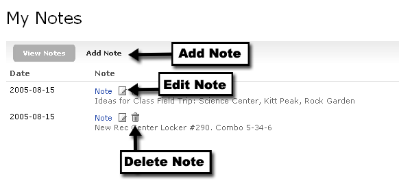

You can also add a new note by clicking the Add Note option within the detailed notes view. When adding a note you will then be prompted for the text of the note. Click Submit to save the note and return to the list of your existing notes. In addition to the note text, the date of the note will be displayed. You can edit or delete a note by clicking the applicable icon next to the note link.
